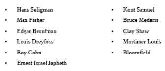

BÖLÜM 29
Tarihçiler Sınıfta Kalmıştır
Tarihçiler Ford’un beyanatını her zaman gerçek olarak kabul etmişlerdir. Amerikan tarihçileri mesleklerinde sınıfta kalmışlardır. Tarihçiler konuşmaları gereken zamanda susmuşlardır. Tarihçilerin Warren raporundaki anormalliklere duyarsız kalışları Amerikan halkının görmesi gereken gerçeklerin örtülmesine zemin hazırlamıştır. Tarihçiler tarih karşısında kendilerine göre sorumlulukları olmayan gazeteciler ile birlikte hiçbir hakları olmamasına rağmen gerçekleri örtbas etmişlerdir.
Allahtan tüm tarihçiler “suskunluk yasasının” kapsamında değillerdir. Birkaç cesur tarihçi isimlerini ve mesleklerini riske atarak doğruları konuşmaktan kaçınmamıştır. Bunlardan biri Güneydoğu Louisiana Üniversitesi tarih bölümünden Prof. Dr. Michael L. Kurtz’tur. Son yirmi yıldır verdiği suikastlar dersinde Kurtz meslektaşlarının sessizliğini bilimsel makalelerle destekli şekilde protesto etmektedir. Ayrıca Hugh Trevor Roper gibi Kennedy suikastının bir komplo olduğunu derhal gören ve söylemekten çekinmeyen birkaç Avrupalı yazar da vardır. Gerçeği görerek Amerikalı meslektaşlarından farklı olarak Kennedy suikastındaki büyük komployu ispatlamaya çalışan Avrupalı gazeteciler de bulunmaktadır.
Bu gazetecilerden biri Fransa’nın prestijli gazetesi Le Figaro haber şefi Leo Sauvage’dir. Mart 1963 tarihinde yani Warren raporunun yayımlanmasından sadece altı ay sonra Sauvage The Oswald Davası isimli kitabını yayımlamıştır. Avrupa’da çok tutulan bu kitap Amerika’da kabul görmemiştir.
Aslında Sauvage kitabının Amerika’da yayımlanması için New York Times ile bir sözleşme imzalamıştır. Ancak 300’ler Komitesi üst kurulunda bulunan ve New York Times’in sahipleri olan Sulzberger ailesi Warren raporu yayımlandıktan sonra imzaladıkları sözleşmeden geri çekilmişlerdir. İşte bu davranış tarzı McCarthy soruşturması sırasında New York’taki gökdelenlerden yalanlarını gür sesleriyle haykıran Amerikan basın patronlarının gerçek yüzüdür. Basın veya medya Kennedy suikastının Amerikan halkı gözünde İç Savaş gibi tarihin bir dip notu olmasını istemektedir. Ama durum böyle değildir. Bu olayın tarihin sayfalarında bu şekilde yer almasını önleyecek pek çok yanıtlanmamış soru ve çelişki bulunmaktadır.
Amerikan halkı bu oldu bittiye izin vermemelidir. Ulus olarak Amerika Birleşik Devletleri Tek Dünya Devleti - Yeni Dünya Düzeni tezgâhına son hızla ilerlerken Kennedy suikastını unutmamamız gerekmektedir. Halkın dikkatine sunulmayan durum Amerika’daki Yeni Dünya Düzeni tezgâhının tam da genç başkanın ölümü sonrası gündeme getirilmiş olmasıdır. Kennedy’nin ölümü sonrası 300’ler Komitesi diye bilinen ve Amerikan devletinin en üst düzeyine çöreklenmiş gizli paralel yapının lehine çok büyük bir güç kayması yaşanmıştır.
(Kaynak: Deep Politics and the Death of John F. Kennedy,
Peter Dale Scott)
Kanadalı bir tarihçi olan Scott’a göre Kennedy’nin tüm görev süresini tamamlaması halinde Amerika Vietnam Savaşı’ndan erkenden çıkacaktır. Hatta Kennedy suikastı sonrası tetiklenen tarihsel gelişim de farklı olacaktır. Örneğin BBaşkan Clinton yıllar sonra seçilemeyecek dolayısı ile Yugoslavya ve Irak savaşları devam etmeyeceklerdir.
(Kaynak: John F. Kennedy and Vietnam, 1999 John Newman)
Gerald Posner Warren raporunun en büyük destekçilerindendir. Bu kişi hakkında gerçekleri Michael Parenti ve Gary I. Aguilar’ın son zamanlarda ortaya koymuşlardır. Konu hakkında bir başka referans kitabı Harry Livingstone tarafından 1995’te yayımlanan Killing Kennedy isimli eserdir. Konu hakkındaki referanslara HSCA baş danışmanı Robert Blakely’in 15-21 Kasım 1993 tarihlerini kapsayan Haftalık Washington Post baskısındaki makalesi, Wisconsin Üniversitesi tarihçilerinden David Wrone’nun Şubat 1995’te Journal of Southern History’de yayımlanan makalesi eklenebilirler.
Oswald’ın Kennedy suikastındaki tek tetikçi olduğu inancı hâlâ yaygın olmakla beraber Dale Scott ve Henry Hurt gibi kişilerce bu inanç çürütülmektedir. Ama “Büyük Yalan” yok olmakta hâlâ direnmektedir. Kennedy suikastında James Jesus Angleton ve kendisine bağlı gizli Karşı Haber Alma, Özel Araştırma gruplarının işlevleri nelerdir? Angleton’un rolü eski Silahlı Kuvvetler İstihbarat görevlisi yazar-tarihçi John Newman tarafından Oswald ve CIA isimli eserde verilmektedir. Bu kitapta Oswald’ın tutarsız bir kişiliği olmadığı gibi Deniz Kuvvetleri İstihbarat Servisinde çalışan çok zeki biri olduğu anlatılmaktadır.
Kennedy cinayeti bugün için çok önemli olup artık her gün yeni “Kennedy Dosyaları” açıklanmaktadır. 300’ler Komitesi’nin hâlâ Amerika’yı yönettiği gerçeği ortadadır ve dolayısı ile suçlular cezadan kaçabilmektedirler. Kennedy suikastı ile gerçekleştirilen “rejim değişikliği” milyonlarca Amerikan vatandaşının gözleri önünde yaşanmıştır. Hâlâ halk bu olayın neden ve kimler tarafından gerçekleştirildiğini bilmemektedir. Bu konuda biraz aydınlatıcı bilgi vereceğimi ümit ediyorum. Tarihçilerin çoğu ya da tarih bilimi, Warren raporu üçkâğıtçılığını oluşturan yüzlerce uyduruk delili araştırarak çürütmeyi reddetmektedir. Burada saklanan gerçeklerin en ufak kısmını ifşa etmemiz bile çok önem taşımaktadır. Kennedy suikastına bakarken aşağıdaki referans noktalarını dikkate almamız gereklidir:
- John F. Kennedy neden öldürülmüştür ve cinayet neden halkın gözü önünde cereyan etmiştir?
- Bu cinayette emri kim vermiştir ve katiller kimlerdir?
- Başarılı bir örtbas operasyonu ile cinayeti planlayanlar ve katiller kaybolup gitmişlerdir.
Bu noktaları elimden geldiğince açıklamaya çalışacağım. Söylediklerimin bazıları kabul görürken diğerleri göz ardı edileceklerdir. Sizler yani okurlarımdan tek ricam açıklamalarımı önyargısız okumalarıdır.
22 Kasım 1963 tarihinde Amerika’yı derinden sarsan bir olay yaşanmıştır. O uğursuz günde uzmanlarca planlanmış bir cinayet Dallas Dealey Plazada toplanmış binlerce vatandaş ve milyonlarca televizyon seyircisinin gözleri önünde işlendiğinde mermi sesleri tüm dünyada yankılanmıştır.
Suikast iki yıllık titiz bir planlama sonucu ortaya çıkmış ve Amerika’nın en keskin nişancıları olan üç kişilik bir grup tarafından 100 metre menzilli 7.65 kalibrelik Mauser tüfekleriyle gerçekleştirilmiştir. O gün Amerika ve tüm Batı dünyası derin bir travmatik şoka girmiştir. Dealey Plazada cereyan eden kanlı olay kurucularımızın ülkemiz için oluşturdukları rotayı kökten değiştirmiştir. Bu cinayet sonrası Amerikan sosyal yaşamında hâlâ etkileri devam eden ve uyuşturucu kültürünün yerleşmesini sağlayan Vietnam Savaşı hızlanmıştır. Bu savaş hâlâ bu ülkenin siyasi ve ekonomik yaşamını etkilemektedir.
John F. Kennedy neden öldürüldü?
Kennedy ailesinin hikâyesi oldukça iyi bilindiğinden burada tekrar detaylı anlatmaya gerek görmüyorum. Kennedyler İrlandalı isyancılar olarak bilinirler. “Baba Joe” yani John’un babası savaşta Almanya’yı desteklediğini söyledikten sonra Amerika Birleşik Devletleri Londra Büyükelçiliği’nden alınmıştır. 300’ler Komitesi hizmetkârı Roosevelt ve tüm savaşların sorumluları olan uluslararası bankerler “Baba Joe”yu harcamışlardır. Joe Kennedy Londra’dan geri çağrılmıştır ancak kendisine yapılan bu hakareti hiçbir zaman unutmamıştır. Joe Kennedy ve oğulları Roosevelt gibi edilgen bir hizmetkâr olmayı hiçbir zaman kabul etmemişlerdir. Beyaz Saray’a seçildiğinde John F. Kennedy bunun kendi başarısı olduğunu sanmaktadır. Gizli güç genç Kennedy’i ürkütmemek için profilini bu süreçte çok düşük tutmaktadır. Başta nazikçe ancak sonradan tüm şiddetiyle 300’ler Komitesi Kennedy’nin boynuna taktıkları dizginleri kabul etmesini talep etmektedir. Durumu fark eden Kennedy başkanlık üzerindeki tüm vesayeti kaldıracağını haykırmaya başlamıştır.
Kennedy araştırmaları gösterdiği üzere bir İngiliz örgütü olan Kraliyet Uluslararası İlişkiler Enstitüsü (RIIA)’nın başkanlığı ve Amerika Birleşik Devletleri üzerindeki hegemonyasını fark etmişti. Kennedy ulusları kontrol eden gizli teşkilatlardan nefret etmekteydi ve ait olduğu Katolik Kilisesi ile Masonluk arasındaki düşmanlık çerçevesinde devletin üst düzey pozisyonlarında bulunan Mason sayısı karşısında dehşete düşmüştü. Kennedy büyük Disraeli’nin (Lord Beaconsfield) bir keresinde söylediği “Seçilmiş hükümetler ülkeleri nadiren yönetirler.” sözünü iyi bilmekteydi. Kennedy ayrıca Winston Churchill’in Amerika ve İngiltere arasında özel ilişki bulunduğu şeklindeki sözlerinin de farkındaydı. Başkan bunun “özel ilişkiden” çok “özel kontrol” olduğunu biliyordu.
Kennedy’nin yabancı devletlerin başkanlık üzerindeki kontrolünü kaldırma çabaları özellikle Kruçev, RIIA, CIA ve Beyaz Saray yetkililerince kandırıldığını anladığı Küba Misil Krizi esnasında sertleşti.
Kennedy şöyle kandırılmıştı: Kruçev CIA’nin Amerika için büyük tehdit olarak gösterdiği Ruslarca Küba’ya gizlice yerleştirilen misilleri kaldırmaya razı olmuştu. Aslında bu misiller kısa menzilli ve neredeyse kullanım süreleri dolmuş silahlardı. Buna karşılık Amerika Türkiye’ye yerleştirdiği son model uzun menzilli roket sistemlerini kaldırdı. Yani sonuçta kaybeden Amerika olmuştu.
Kennedy Küba Misil Krizindeki fiyaskonun CIA ve özellikle Henry Kissinger gibi Beyaz Saray yetkililerinin sorumluluğunda olduğunu gördüğünde eşine Kissinger’in Beyaz Saray’a alınmaması için gerekli emirleri verdiğini söylemiştir. Kissinger’in Beyaz Saray’dan atılması 300’ler Komitesi’ne ağır bir darbedir çünkü Kissinger RIIA’nın başkana danışmanlık yapan en önemli adamıdır.
Burada Henry Kissinger’in başkan Nixon’un görevinden alınmasında da büyük rol oynadığını tekrar hatırlatmak isterim. Başkan Kennedy’nin Kissinger’e koyduğu yasak İngiltere ve Amerika arasındaki “özel ilişkideki” iletişimi fena şekilde bozmuştu. Tabii ki buna 300’ler Komitesi’nin oluru yoktur. Kissinger’in RIIA adına kuryelik yaptığını eski Sovyet ajanı Oleg Penkovsky ortaya çıkarmıştır. Beyaz Saray güvenlik amiri MI6 ajanı McGeorge Bundy Başkanla yüz yüze görüşmesi için harcanan tüm çabalara rağmen Penkovsky’i Kennedy’den uzak tutmuştur. Ancak McGeorge Bundy’e karşı çarpışanlar bir yolunu bularak gizli belgeleri Beyaz Saray’a sokarak başkana ulaştırmışlardır. Belgeleri inceleyen Kennedy özellikle Kissinger tarafından nasıl ihanete uğratıldığını ve 300’ler Komitesi’nin ülke üzerindeki kontrolünü açıkça görmüştür. Artık durumdan haberdar olan başkan Güney Vietnam’daki savaşın durdurulması ve Amerikan askerlerinin en kısa sürede geri çekilmeleri konusunda 263 numaralı memorandumu yayımlamıştır.
Kennedy 2 Ekim tarihinde Savunma Bakanı McNamara’dan çok gizli emrini Dışişleri Bakanı ve Genel Kurmay Başkanına duyurmasını talep etmiştir. Emre göre tüm Amerikan askerleri Ekim 1965 itibarı ile Vietnam’dan çekileceklerdir. Bu noktada Kennedy 300’ler Komitesi’ne en can alıcı darbeyi vurmak istemiştir yani Komitenin Federal Rezerv Bankaları kontrolünü kaldırmak istemiştir. Belki aranızdan birileri “Böyle bir kontrol olamaz.” diyebilirler. Bu nedenle vatansever parlamenter ve Temsilciler Meclisi Bankacılık Komitesi Başkanı Louis T. McFadden’in aşağıdaki sözlerini aktarmak isterim:
“4 Mayıs 1933 Perşembe
İngiltere kârını konsolide etmeye başlamıştır. Temmuz 1931 tarihinde Londra’da yapılan 7. Güç Konferansı’nda imzalanan sözleşme ile birlikte Federal Rezerv sistemi Uluslararası Takas Bankası kontrolüne girmiş ve İngiltere Amerika Birleşik Devletleri’nin boynuna taktığı ilmeği sıkmaya başlamıştır…”
McFadden eski sosyalist Ramsey McDonald’ın Federal Rezerv Bankasının yönetimini uluslararası bankerlere bırakmak için Amerika’ya geldiğini ve Amerikan halkının aleyhine nasıl bir suç işlendiğini açıklamaktadır:
“4 Mart öğlen saatlerinde Roosevelt bir eli İncil üstünde olmak üzere Amerika Birleşik Devletleri Anayasasını koruma ve muhafaza etmek üzerine ant içmiştir. 5 Mart 1933 gece yarısı ise aynı Roosevelt Amerikan halkının mal varlığına el koymuştur. Başkan Federal Rezerv’in altın karşılığı veya altına pariteyle bağlı para basımına son vermiştir. Bu gün Amerikan halkının elinde para niyetine kâğıt parçaları bulunmaktadır. Hazine bu kâğıt parçaları karşılığını altın veya gümüş olarak ödememektedir.”
Bilinmeyen bir şahsın McFadden’in konuşma tutanaklarını gizlice Beyaz Saray’a sızdırması sonucu Kennedy Federal Rezerv sisteminin gözden geçirilmesi için emir erir. Gözden geçirme raporları sonrası Kennedy Amerika Birleşik Devletleri’nde Anayasal paranın basılması için kararname çıkarır.4 Temmuz 1963 tarihli ve 11110 numaralı kararnameye göre Federal Rezerv bankalarınca basılan Federal Rezerv banknotları yerine Hazineden Amerikan Doları basması istenir. Kararnameler kurucularımız tarafından anayasal kabul edilmelerse de hukuka uygun olmaları halinde kanun hükmündedirler. Bu anayasal hüküm nerededeyse tüm başkanlarımız tarafından ihlal edilmiş olup Theodore Roosevelt binden fazla kanun hükmünde kararname imzalamıştır. Kennedy’nin Federal Rezerv sistemini baypas ederek tasfiyeye götürmesi Londra ve Washington’daki hainleri paniğe sürükler çünkü bu durumda 300’ler Komitesi’nin para kaynakları kurutulmaktadır. Hazineye Amerika Birleşik Devletleri Doları basma görevini veren kanun hükmündeki kararnamenin yayımlanması sonrası 300’ler Komitesi üst düzey bir toplantı düzenleyerek Amerika’yı kontrol etmelerine olanak sağlayan mekanizmaya yapılan bu saldırıyı değerlendirir.
Federal Rezerv sistemini pasifize etme kararı sonrası Kennedy yabancı devlet ve organizasyonların hükümranlıklarına son verecek bir dizi karar alır:
- 55,56 ve 57. Ulusal Güvenlik Aksiyon memorandumları uyarınca CIA’nin çoğu yetkisi Genel Kurmay Başkanlığı’na devredilir. Bu kararlar James Jesus Angleton ve Dulles kardeşleri paniğe sokar.
- Kennedy Moskova ile Nükleer Denemelerin Yasaklanması Anlaşmasını imzalar ve Sovyetler Birliği ile ilişkilerin geliştirileceği mesajını verir.
- Kennedy “Soğuk Savaşı” bitirme mesajları vermektedir.
-Büyük petrol firmaları ve uluslararası dev şirketlere avantaj sağlayan vergi yasaları kaldırılırlar.
- Kennedy Nathan Goldman ve Meyer Lansky’nin Amerika Birleşik Devletlerinden sınır dışı edilmeleri emrini verir. FBI Başkanı J Edgar Hoover’ın gitmesi gereği hakkında söylemlerde bulunur.
Homoseksüelliği herkesçe bilinen Hoover istifa etmeyi kabul etmeyince Başkan Kennedy’nin kardeşi Robert Kennedy bir gün Hoover’ın ofisine zor zapt ettiği bir kurt köpeği ile girerek “Oğlanlardan nefret ediyorum!” diye bağırır. Göründüğü kadarıyla Katolik öğretisi içinde yetişen Kennedy kardeşler Hoover’in özel yaşamından ve erkek arkadaşı Clyde Tolson’dan çok rahatsızdırlar. Washington’daki gizli paralel yapıyı paniğe sokan bir başka olay ise Kennedy’nin devlet sırlarına karşı çıkmasıdır. 27 Nisan 1961 tarihinde bir grup gazeteciye Kennedy şunları söylemiştir:
“Sır açık ve özgür toplumlarda iğrenç bir kavramdır. Biz gizli örgütler, gizli yemin törenleri ve toplantılara kesinlikle karşıyız. Olası tehlikelere karşı gerçeklerin gizlenmelerinin toplumlara yarardan çok zarar verdiklerine uzun süre önce karar verdim.”
Kennedy’e yanıt gelmekte gecikmeyecek ve Başkan halkının gözünün önünde en acımasız şekilde cezalandırılacaktır. İstihbarat kaynaklarım Texas Valisi John Connally’nin katil çetesine ekstra “bonus” sağladığını belirtmektedirler. Belki de bu nedenle Dallas halka açık infaz için ideal yer olarak seçilmiştir.
Connally suikast tarihinde Amerika Birleşik Devletleri’nin Ortadoğu politikalarını petrol firmaları ve İsrail’e karşı olmakla suçlamakta ve değiştirilmelerini istemektedir.
Şimdi araştırılması gereken konu:
Kennedy suikastından kim sorumludur ve
cinayeti kim işlemiştir?
Bu konu yüzlerce kitap, açık oturum ve filmde işlenmiş olup size sunacağım senaryonun gerçeğe en yakını olduğunu düşünmekteyim. İstihbarat kaynaklarına göre 300’ler Komitesi Kennedy’nin başkanlıktan alınmasına karar vermiştir. Kennedy’nin Küba Misil krizinde alevlenen öfkesi, Vietnam Savaşı’na son verme isteği, ulusal para birimi üzerine yayımladığı kararname ve kendisini Beyaz Saray’a çıkaranların sözlerine kulak kendisinin Komite için gerekliliğini ortadan kaldırmıştır. Kennedy’nin para veya seks ile satın alınması da sözkonusu değildir çünkü başkan bu iki şeye fazlasıyla sahiptir. Burada Kennedy’nin 300’ler Komitesi karşısında galip geleceğini özellikle de para kontrolünü ele geçirmeden bunu yapabileceğini düşünmek hayalperestlik olacaktır. Amerikan halkının bilmediği kararname sonrası Amerikan Hazinesinin 4 milyar dolar tutarında yeni Amerikan Doları bastığıdır. Bu yeni paralar dolaşıma konsa Federal Rezerv yani 300’ler Komitesi’nin para kaynakları üzerindeki hegemonyası sona erecektir.
Hz. İsa karanlık güçlere hizmet eden maneviyatları sapık siyasi grupların her milletin başına musallat olduğunu belirtmektedir. Ben de Amerikan tarihinde yaptığım araştırmalar sonucu 300’ler Komitesi denen bu kara örgütün elinde olduğumuzu fark etmiş durumdayım.
Bazı komplo teorisyenleri sadece CFR, Üçlü Komisyon, Bilderberg Grubu, Rhodes Vakfı ve Yuvarlak Masa teşkilatının 300’ler Komitesi denen canavarın icra merkezleri olduğunu savunurlar. Bazıları bu organizasyonun gerçek liderlerinin Masonluk, Kafatası ve Kemikler, Parşömen ve Anahtarlar ya da İlluminati örgütlerinde olduklarını iddia ederler. Konuya yeni giren komplo teorisyenleri ise her şeyi dolayısı ile Kennedy suikastını de Yeni Dünya Düzenine bağlamaktadırlar. Aslında Yeni Dünya Düzeni veya Tek Dünya Devleti kavramları 4000 yıldır varlıklarını sürdürmektedirler. 1917 yılında Komünizmin ortaya çıkmasıyla bu kavramlar iyice açığa çıkmışlardır. Kennedy suikastı ve Nixon skandalı 300’ler Komitesi’nin Amerika’daki acımasız terör gücünü göstererek tüm Amerikalı siyasileri korkutmayı amaçlayan şovlardır.
Kennedy Projesi İngiliz İstihbarat Servisine Verilir?
Başkan Kennedy’nin ortadan kaldırılma işi İngiliz gizli istihbarat servisi MI6 Kuzey Amerika Masası eski şefi Sir William Stephenson’a verilir. Stephenson 1938 yılında Başkan Roosevelt ile Winston Churchill’in temsilcisi olarak görüşen kişidir. 1938 buluşmasında enteresan olan o sırada Churchill’in İngiliz Başbakanı olmayışıdır. Amerika’yı her zaman yönetmiş olan İngiliz hükümdarları dünyayı kanlı bir savaşa sokma hevesindedirler ve o an Churchill Başbakan olarak değil 300’ler Komitesi yöneticisi olarak Stephenson’nu Roosevelt’e gerekli emirleri vermek üzere göndermiştir.
Sözlü emir verme yöntemi Kraliçe I. Elizabeth’e bağlı çalışan ünlü casus Sir Francis Walsingham’dan beri devam eden bir gelenektir. Bu yöntem ileride ortaya çıkabilecek yazışmaları baştan önlemektedir. İngiliz dış politikasının uygulanmasında MI6 casuslarının kullanılmalarına bir başka örnek ise Bolşevik Devrimi’nde Troçki ve Lenin’i sürekli kontrol eden Bruce Lockhart’tır. MI6 halen Kraliçe II. Elizabeth adına dış politika icra etmektedir ve kraliçenin yerine geçecek kişi zamanında da bunu yapmaya devam edecektir.
Kraliyet ailesinin yakın dostu olan Stephenson usta bir casustur ve MI6 içinde Kraliçeye direkt bağlı çalışan elit Özel Operasyonlar Birimini yönetmektedir (SOE -“1001”). Aslında Stephenson’un Roosevelt’e söylediği Tavistock İnsan İlişkileri Enstitüsü’nce kavramlaştırılan “Amerika ve İngiltere arasındaki özel ilişkinin” önemidir. Bu özel ilişki devlet veya özel kurumların her düzeyinde hatta resmi gizli belgelerde bile geçerli olacaktır.
“Özel İlişki” kelime anlamından farklı bir anlam taşır ve kendine özgü bir yaşamı vardır. Stephenson Roosevelt’e “Özel İlişkinin” bir parçası olarak Stratejik Servis Ofisini (OSS) Amerikan istihbarat servisi olarak kuracağını söylemiştir. Bu kurum daha sonra CIA adını alacaktır. Stephenson ayrıca bu kurumu idare edeceğini ve olası savaşa karşı hazırlayacağını Roosevelt’e anlatmıştır. Halen CIA bir İngiliz kurumudur ve İngiltere tarafından yönetilmektedir. Burada dikkat edilmesi gereken 1938 yılında gelecekteki büyük değişikliklerin Roosevelt’e aktarılmalarıdır. Stephenson bir yıl sonra çıkacak savaşı önceden bilmektedir. Bu görüşme hiçbir şekilde resmi kayıt altına alınmamış olup Roosevelt’in Amerikan halkını hiç istemediği bir savaşa sürüklemesine zemin hazırlamıştır. Bu görüşme ayrıca İsrail devletinin kurulmasına ve milyonlarca Amerikalının yaşamlarına ve korkunç devlet borçlanmasına neden olacak Kore ve Vietnam savaşlarına da yol açmış, Amerikan halkını tam anlamıyla 300’ler Komitesi’ne bağlı Wall Street, uluslararası bankerlere köle haline getirmiştir.
300’ler Komitesi’ne bağlı bankerler I. ve II. Dünya Savaşı borçlarının hemen ödenmelerine karşı çıkmışlardır. Bu bankerler borç ödemelerinde faiz kazancı için ödemesi ancak 1930’da biten Amerikan İç Savaş borçlarının tasfiyesi takviminde ısrar etmişlerdir. Rothschild’ler İç Savaş borçlanması protokolüne aykırı olarak sözlerinden dönmüşler ve savaş borçlarının gümüş olarak ödenmesini kabul etmeyeceklerini Amerikan makamlarına bildirmişlerdir. Kennedy suikastı için Stephenson OSS zamanında sağ kolu olan ve kendisi gibi Kanada vatandaşı Binbaşı Mortimer Louis Bloomfield’i göreve getirmiştir.
Bloomfield Stephenson tarafından FBI’ın karşı istihbarat bölümü olan 5. Bölümünün başına getirilmiş ve II. Dünya Savaşı sonuna kadar bu mevkide kalmıştır. Hıristiyan olmamasına rağmen Kudüs Düzeni isimli örgüt üyesi ve FBI başkanı J. Edgar Hoover’ın yakın arkadaşıdır. Ne enteresan ki CIA ve FBI’ın 5. Bölümü iki Kanadalı tarafından uzun yıllar yönetilmişlerdir. Daha sonra önemini göreceğimiz şekilde Hoover ve Bloomfield rahip Carl McIntyre ve General John. B. Medaris ile çok yakın dostturlar.
Tüm bunlar 300’ler Komitesi’nin Amerika Birleşik Devletleri iç ve dış siyasetinde elinde bulundurduğu gücü ve kontrolü göstermektedirler. Stephenson ve Bloomfield Özel Operasyonlar Birimi (SOE) ve MI6 çalışanlarıdırlar. Bu kurumun hikâyeleri daha önce orada çalışan Ian Fleming tarafından “James Bond” filmlerine konu olmuştur. Belki Bond filmlerindeki senaryolar kurgudur ancak bu örgüt kurgu değil gerçektir. “Fleming” isminin şahsın kendi ismi mi yoksa MI6 tarafından verilen ikinci ismi mi olduğu hâlâ şüphelidir. İngiliz istihbarat örgütü İngiliz parlamentosuna hesap vermez ve direk olarak monarşi tarafından fonlanır. Dolayısı ile MI6’in başındaki birkaç kişi dışında Stephenson-Bloomfield misyonunu bilen kişi yoktur.
Stephenson ile birlikte çalışan Bloomfield dünya tarihindeki en başarılı suikast ve örtbas etme operasyonunu planlamıştır. Bu başarının arkasında Alman Komünist Willi Munzenberg’in geliştirdiği ve MI6 tarafından Bolşevik Devrimi’nde kullanılan “hücre” yapılanması sistemi bulunmaktadır. Munzenberg birçok tabela firması arkasından operasyon yapma olanağı sağlayan sistemin mucididir.
Winston Churchill gibi ünlü kişilerin temsilciliğini yapan Sir William Stephenson Jamaika’daki Montego Körfezinde bulunan Tryall Sitesinde yaşamaktadır. Stephenson buraya “Tryall Kulübü” demektedir. Zengin İngiliz emeklilerin yaşadığı bu yerde Ian Fleming’in ilk “James Bond” filminin çekilmesi tesadüf değildir. Bu yerde yaşayan Ian Fleming, Binbaşı Louis Mortimer Bloomfield ve Edward Plunkett Taylor gibi kişilerin istihbarat örgütleri ve gizli operasyonlarla olan ilişkileri de tesadüf değildir. 1940 yılında Toronto’ya MI6 “Özel projeleri” için gönderilen Taylor daha sonra Washington’daki gizli iletişimi sağlamak üzere Churchill’in temsilcisi olarak atanmıştır. Taylor’un görevleri arasında “Tarafsızlık Kanununa” aykırılıktan Amerika için yasal olmayan ancak Lord Beaverbrook (Max Aiken) tarafından üstesinden gelinen İngiltere’ye silah sanayinde kullanılmak üzere yapılan hammadde satışı vardır. Bu işi gizlice becermek için Argus Grup isimli ticari kurum kurulmuştur. Kurum HSBC Bank sahiplerinden Keswick ailesi, Rupert Hambro ve Sir James Goldsmith tarafından finanse edilmiştir. Amerikalıların çoğunluğu hâlâ Amerika’nın Stephenson ve Roosevelt arasında kararlaştırılan “Özel İlişki” çerçevesinde 300’ler Komitesi’nce yönetildiğinin farkında değildir.
1956 Bloomfield Montreal’e gönderilerek gizli operasyonlar için Permanent Industrial Exhibitions (Permindex) isimli firmayı kurar. Bu firma daha sonra New Orleans Dünya Ticaret Merkezinde Clay Shaw tarafından işletilmeye başlanır. Clay göreceğimiz gibi John F. Kennedy cinayetinde önemli rol üstlenecektir. İşin enteresan tarafı Permindex firmasının köklerinin Keswick, Hambro, Jardine Matheson, H.M Rothschild ve Barclays Bank tarafından desteklenen Argus Grup aracılığı ile British East India Company’e dayanmasıdır. Argus Grup daha sonra ismini Hollinger Gruba çevirecektir. Bloomfield çok gizli bir grup olan “1001” üyesidir ve Prens Philip kanalıyla Kraliyet ailesiyle bağlantılıdır.
Böyle bir korkunç güce karşı kim ayakta kalıp mücadele edebilir? 300’ler Komitesi’ni çökertecek tek güç Hıristiyanlık olmasına rağmen son yirmi yıldır zayıflatılan, yolundan çıkarılan, içine ajanların yerleştiği kilise bunu yapacak cesaret, güç ve niyete sahip değildir. Günümüzde Hıristiyanları böyle bir Haçlı Seferine çıkaracak Martin Luther yoktur. Siyasi olarak Senatör “Kavgacı Bob” Follette kalibresinde adam da yetişmemektedir.
Papa II. John Paul buna niyetlendiyse de kendisine Mehmet Ali Ağca tarafından suikast yapılması sonrası geri çekilmeye karar vermiştir. Amerika Birleşik Devletleri başkanlığı Kennedy’i kurtaracak güçte değildir. Ancak çok kuvvetli ve tam destekli bir lider Olimpos Kurulu karşısında kalabilir. Ancak kaç Amerikalı 300’ler Komitesi’nin varlığından haberdardır? John F. Kennedy’nin halkın içinde vahşice infazı Komite için Tek Dünya Devleti denen feodal sisteme geçişte bir araçtır.
Hıristiyan Rusya’nın yıkılışı hepimiz için bir ders olmalıdır. Tehlikenin ortadan kalktığını veya Rusya’da olanların Amerika’da olmayacağına inanmak tam bir saçmalıktır. Washington’daki düşmanın tüm dış düşmanlardan daha kötü olduğunu görmediğimiz sürece Rusya’da olanlar başımıza gelecektir. Hz. İsa açık konuşan bir kişiydi ve o günkü siyasi yönetici ve bankerler aleyhinde mesajlar vermekteydi. O insanlara onları kurtarmak için gönderildiğini söylüyordu. Hz. İsa gizli teşkilatlar ve okült teokrasi aleyhinde konuşmaya başladığında kendi ölüm emrini imzalamıştı.
Bizim anayasamızı ihlal edenlere ve 180 cinayet ritüeline katıldığını kabul eden canavar Alasteir Crowley tarafından kurulduğundan beri çok yol almış olan Kova Burcu Çağına karşı güç oluşturmamız gerekmektedir. Crowley 300’ler Komitesi’nin büyük rahibi olarak otoritesine karşı gelmekten dolayı Kennedy’nin öldürülmesi emrini veren kişidir. Daha önce belirttiğim gibi Kennedy eşine Kissinger’ı deli olarak nitelediğini ve Beyaz Saray’a girişini yasakladığını söylemiştir. Bu konuşma McGeorge Bundy isimli Beyaz Saray güvenlik amirinin atlatılarak başkana gizli belgelerin ulaştırılmasından sonra gerçekleşmiştir.
Eski KGB ajanı Penkovsky Kennedy’e başta Kissinger olmak üzere danışmanları tarafından Sovyetler hakkında nasıl yanlış yönlendirdiğini ispatlar belgeler sunmuştur. Penkovsky bir aracı kanalıyla başkana Küba Krizinin Dr. Leo Szilzard isimli kişinin kurgusu olduğunu anlatmıştır. Bu adam Stanley Kubrick’in filmi Dr. Strangelove’da aynı isimle canlandırılmıştır. Kennedy’nin bilmediği tüm başkanların kontrol altında oldukları ve tüm bilgilere ulaşma imkânlarının olmadığıdır. Bu gelenek başkan Wilson zamanında kontrolörlüğünü yapan MI6 Kuzey Amerika Masası şefleri Albay House ve Sir William Wiseman ile başlamıştır. Kennedy’nin ölüm emri Kissinger’in Beyaz Saray’dan kovulması, Kennedy’nin Federal Rezervi pasifize etme ve Vietnam’dan çekilme kararları sonrası alınmıştır. Kennedy bunları yaparken Amerika Birleşik Devletleri başkanı olarak kimsenin ona zarar veremeyeceği yanlış inancıyla hareket etmektedir.
Kennedy’i ikna etmek için iki başarısız suikast girişimi gerçekleştirilmiş ancak başkan pes etmemiştir. İkinci başarısız girişimden sonra infaz MI6’ten Stephenson ve yardımcısı Bloomfield’e verilmiştir. İkili Kennedy suikast stratejisini gözden geçirmek üzere Mart 1963’te Jamaika’daki Tryall Sitesine gelir. O andan itibaren Tryall Sitesi Kennedy suikastı operasyon merkezi olur. Bu süreçte siteye Stephenson’un “tatil arkadaşları” dediği pek çok kişi gelip gitmektedir. 1963 yılı Mart ayında pek çok Komite toplantısı düzenlenir. Tryall Sitesine gelenlerden biri de New Orleans Dünya Ticaret merkezi sahibi Albay Clay Shaw’dur. Shaw Malta Şövalyeleri örgütü üyesi ve Hoover ve Bloomfield gibi homoseksüelliği bilinen biridir.
Tryall Sitesine düzenli gelip giden yedi kişi saptanmıştır. Bu adamlar benim deyimimle “suikast komitesi” üyeleridirler. Bunların içinde General Bruce Mederas ve eski McCarthy danışmanı Roy Cohn vardır.
Suikast komitesinin arkasında 300’ler Komitesi’nin sınırsız maddi gücü vardır. Yedi suikast komitesi üyesinin yönetim kurulunda bulunduğu holding İsviçre’de kayıtlı olup Roma, New Orleans, Toronto ve Güney Afrika’da şubeleri bulunmaktadır. Bu holding şirketinin ismi PERMINDEX olup bir ahtapot gibi tüm Avrupa’yı kavramıştır. Centro Mondiale Commercial isimli firma PERMINDEX’in talimatlarıyla Fransa Cumhurbaşkanı General De Gaulle’e suikast girişiminde bulunmuştur. Fransa’daki PERMINDEX operasyonları Fransız istihbarat servisi SDECE tarafından MI6 uzantısı olarak deşifre edilince durdurulmuş ve merkez Güney Afrika’ya çekilmiştir. New Orleans Ticaret Merkezinin PERMINDEX yapısı içindeki önemi büyüktür. PERMINDEX ticaret portföyünün büyük bölümü uyuşturucu kaçakçılığına ayrılmıştır. Firma Güney Afrika’da kurduğu düzen içinde uyuşturucu parası ile elmas toplayarak tüm dünyaya satmaktadır. Zaman zaman emniyetin yaptığı uyuşturucu operasyonlarda yakalananlar zavallı taşıyıcılar olup büyük patronlara hiçbir zaman ulaşılmamaktadır. Baştaki patronlar eski Monako Prensi Rainer gibi haklarından fazlaya tamah etmedikleri sürece villalarında, şatolarında lüks yaşamlarını güvenlik içinde sürdürmektedirler. Grimaldi ailesinden gelen Prens Rainer kendisinin dokunulmaz olduğunu düşünerek 300’ler Komitesi’nce iki kere uyarılmasına rağmen kâr payını arttırmıştır.
Uyarıları dikkate almayan prensin eşi eski sinema yıldızı Grace Kelly kaza süsü verilerek öldürülmüştür. Roberto Calvi 300’ler Komitesi’ne uyuşturucu işinde kazık atan bir başka kişi olup Londra’da Mason infazlarına benzer şekilde asılarak öldürülmüştür. İlk bakışta İngiltere’nin Kennedy cinayetine bulaşması akıl almaz gözükse de burada bahsedilen İngiltere sıradan İngiliz vatandaşları değil İngiliz devleti içinde bulunan gizli paralel yapı ve Avrupa Kara Asaletinden gelen kişiler ile onların uluslararası bankaları olarak anlaşılmalıdır. Amerikan tarihi incelendiğinde İngiltere’nin dört Amerikan başkanına düzenlenen suikastlarda başrolü oynadığı görülebilir. Bu başkanlar Lincoln, Garfield, McKinley ve Kennedy’dir. Öldürülen tüm başkanların İngiliz ve Avrupa jeopolitik planlarına aykırı hareket ettikleri ve bu başkanların yerine getirilen kişilerin ise derhal bu Avrupa karşıtı siyaseti değiştirdikleri açıktır.
Lincoln ve Kennedy kendi ölüm emirlerini Amerikan bankacılık sistemindeki yabancı kontrolüne son vermek istediklerinde imzalamışlardır hatta Kennedy daha da öteye giderek Vietnam Savaşı’na son vermeye kalmıştır. Lincoln İç Savaşta Güney ordusu başkomutanı Robert E. Lee’nin teslim olmasından beş gün sonra 14 Nisan 1865 tarihinde Booth tarafından öldürülmüştür. Göründüğü kadarıyla Lincoln Amerikan eyaletleri arasındaki kanlı savaşta görevini yerine getirmiş ancak 300’ler Komitesi’nin Amerikan halkının parasını kontrolüne karşı çıkınca “gereksiz” hale gelmiştir. Lincoln tefecilik faaliyetlerine karşı sıkı kontrol getirmiş ve Amerikan devlet tahvillerinin halka aracı olmadan satılmalarına izin vermiştir. (Eskiden halk ancak Baring Brothers ve Rothschild bankaları aracılığı ile bu tahvilleri alabilmektedir.) Başkan İngiliz “Serbest Ticaret” politikalarını dizginleyerek 300’ler Komitesi’ne büyük maddi zarar vermiştir. Tüm bunlara ek olarak Lincoln British East India Co. yöneticilerinden ünlü ekonomist Adam Smith’in “Serbest Ticaret” prensiplerine karşı gelmiş ve George Washington tarafından konulan “Gümrük Tarifelerini” tekrar uygulamaya koymuştur. Lincoln’un çelik ithalatına koyduğu % 50 vergi başkan ile Baring Brothers ve Rothschild bankaları arasında büyük savaşı başlatmıştır. O verginin konması anından itibaren başkanın öldürülmesi kesinleşmiştir. Lincoln’ün ekonomik siyasetinin mimarı Henry C. Carey düşmanın kimliğini bilmektedir ve 1860 yılındaki seçim konuşmasında şöyle demektedir:
“Onlar (İngilizler) diğer ülkelerdeki sanayileşme ile sürekli siyasi ve ekonomik mücadele içindedirler ve diğer ülkelerde yaşayan insanların sadece tarım ile uğraşmalarını isteyerek onları fukaralaşmaya zorlarlar.”
Bu British East India Company ve haleflerinin başında gizli Amerikan paralel devleti CFR olacak şekilde Tek Dünya Devleti politikasından başka bir şey değildir.
John F. Kennedy cinayeti British East India Co.’nun Çin afyon ticaretine karşı çıkan herkesi temizlemesi gibi 300’ler Komitesi darbelerine karşı duran her ulusal lideri yok etme siyasetinin bir parçasıdır. Amerikan İç Savaşı’nda İngiltere doğumlu Judah Benjamin James Bulloch (Theodore Roosevelt‘in amcası) ile birlikte Konfederasyon İstihbarat Servisinin başına getirilmiştir. Lincoln‘ün ölümü sonrası Benjamin İngiltere’ye kaçarak İngiliz monarşisine yakın kişilerin korumasına girer. Benjamin’in kaçışı 1870 yılında bu adamla beraber Lincoln’ü kaçırma planları yaptıklarını itiraf eden John Starrat ile bağlantısını sorgulanır hale getirir. Daha önce söylediğim gibi Bulloch Anglofon Teddy Roosevelt’in amcası ve akıl hocasıdır. Teddy Roosevelt’in en önemli görevi ülkeyi kararnameler ile yönetmektir ki süresi içinde kendisi 1000’den fazla kararnameyi imzalamıştır. Teodore Roosevelt başkanlığını İngiliz kontrollerinin emirleri altında bir “Genel Vali” şeklinde geçirmiştir. Benjamin’in ihaneti başkan Garfield’in Dışişleri Bakanı James B. Blaine tarafından şöyle açıklanmaktadır:
“Benjamin İngiliz ticari gücünün bu kıtada kalmasını sağlayacak bir konfederasyon yaratmak için çabalamıştır. Benjamin sonuçta doğduğu ülkeye kaçmıştır. Bu adama Londra’da gösterilen saygı ve onu büyük gösterme çabaları sadece hükümetimize duyulan nefret ve Mr. Benjamin’in başarısız ihanetini örtme çabalarından ibarettirler.”
Ayrıca unutulmaması gereken şey Tek Dünya Devleti kavramının Kral III. George ve birkaç Avrupa hanedanın ortak ürünü olduğudur. Bu plan Amerikan Devrimi ile suya düşmüştür. Plan iptal edilmemiş ancak masaya yatırılarak yeni değişikliklere uğramış ve tarihte daha uygun bir dönemde uygulanmak üzere rafa kaldırılmıştır. Konfederasyon kanadına iltica eden iki kişi yani Bulloch ve Benjamin’in İngiltere bağlantıları çok kuvvetli olup bu adamların Teddy Roosevelt zamanında büyük rol oynayan Rothschild uluslararası bankacılık örgütünün casusları oldukları açıktır.
Verdiğim açıklamaların Kennedy suikastındaki İngiliz Gizli Servisinin rolünü kafalarında sorular olan okurlarımı aydınlattıklarını umarım. “Islak İşler” genelde özel organizasyonlara verilirler. Kennedy suikastını planlayanların kesin sonucu alacak deneyimleri ve finansal kaynakları vardır. Binbaşı gizli servis kaynaklarından en keskin yedi nişancıyı bulur. Keskin nişancı olmaları dışında bu adamlar gizli servis prosedürleri ve teknikleri konularında eğitimli kişilerdir. Yedi keskin nişancı iki ay boyunca tüfek talimi ve yoğunlaştırılmış eğitim için Pueblo Mexico’da bulunan Hıristiyan misyonuna gönderilirler. Bu misyon FBI Başkanı J. Edgar Hoover ile beraber Amerikan Hıristiyan Kiliseler Kurulunu FBI 5. Bölümü altında kuran rahip Carl McIntyre tarafından yönetilmektedir.
Keskin nişancılara suikastta kullanılmak üzere Alman yapısı Mauser suikast tüfekleri verilir. Oswald Texas Okul Kitapları Deposundan kaçtıktan sonra iki emniyet görevlisi binada arama yapmışlar ve dışarı çıkarken uyanık bir fotoğrafçı tarafından görüntülenmişlerdir. Bu emniyet görevlilerinin ellerindeki tüfeklerin birinin üstünde görünür şekilde “Mauser 7.65. Made in Germany” yazmaktadır.
MacIntyre’ın misyonunda keskin nişancılar Bloomfield tarafından oluşturulan maketlerde suikastın işleneceği Dealey Plaza’ya iyice alışırlar. Tüm eğitimler kanıt bırakmamak üzere en ufak detay hafızalara işlenecek kadar kâğıt kullanılmadan veya kayıt tutulmadan yapılırlar. Ancak suikast timi ölümcül bir hata yapar. Planlayıcılar tek katil diye gösterilecek olan Lee Harvey Oswald’ı vuracak ve yanına Manlicker marka tüfeği bırakarak intihar süsü verecek artçı timin hızını iyi ayarlayamamışlardır.
Oswald’ın başkanı vurduktan sonra intihar etmesi kuşkusuz mükemmel bir plandır. Bu böyle gerçekleşse Amerikan halkının kafasında Oswald’ın “tek katil” olduğu konusunda zerre şüphe doğmayacaktır. Suikastı planlayanların hesap edemediği bir başka şey ise tahminen Deniz Kuvvetleri İstihbarat Servisine çalışan ve çok zeki olan Oswald’ın durumu kavrayıp hızla olay yerinden uzaklaşması olmuştur.
Şu anda devlet sırrı olarak mühür altında tutulan otopsi raporları bugün açıklansa Kennedy’i öldüren mermilerin II. Dünya Savaşı’ndan kalma İtalyan yapımı Manlicher marka silahtan çıkmadığı görülecektir. Başkan Kennedy’n kafatasının arkasını parçalayan dum dum kurşunu Mauser tüfekten çıkmıştır. Dealey Plaza’daki korkunç cinayet sonrası örtbas için derhal Warren Komisyonu kurulmuştur. Warren Komisyonu 300’ler Komitesi’nin PERMINDEX ile bağlantılı çalışan United Brands Fruit Company yöneticisi Max Fisher kontrolündedir. Fisher’in üyelere verdiği yalan bilgiler karşısında Warren Komisyonunun gerçeği istese bile ortaya çıkaramayacağı açıktır.
Pueblo’daki misyona gönderilen yedi keskin nişancıdan sadece üçü suikast için seçilir diğerleri ise suikast sonrası Oswald’ı öldürecek ve polisi durduracak artçı takıma ayrılırlar. Silahlar ve lojistikten biraz anlayan bir kişi bile Oswald’ın Kennedy’i bu şekilde öldüremeyeceğini bilir. Her şeyden önce Oswald böyle bir suikastı gerçekleştirecek kadar soğukkanlı değildir. Örneğin SAS keskin nişancıları ilk başta çok zorlu bir taramadan geçirilerek seçilirler ve daha sonra da çok uzun süreli eğitim ve koşullama sürecinden geçerler. Oswald’ın böyle bir taramadan geçme şansı yoktur. O kadar ki Oswald’ın attığı mermi ile başkan Kennedy’in öldürülmesi son yüzyılın en büyük şans eseri olmalıdır.
Ayrıca Oswald’ın fotoğraflandığı anda elinde bulunan silahın hareket eden hedefleri vurma yeteneği yoktur. Tüm bunların ötesinde açılan ateş Kennedy konvoyunun önündeki üst geçit ve caddedeki lagarların bulunduğu yönden gelmektedir. Okul Kitapları Deposundan açılan ateş yoktur zaten konvoy cinayet anından önce bu binayı oldukça geçmiş durumdadır. Zaten Kennedy konvoyun arkasından açılan bir ateş sonrası öldürülse merminin kafasının arkasından girerek önünden çıkması gereklidir halbuki durum bunun tam tersidir. Bu durumu otopsi fotoğraflarında gizlemek için Kennedy’nin kafatası tamamen açılmış ve beyni araştırma için çıkartılmıştır.
Emniyet güçlerince yazılan tüm raporlarda Oswald’ın binayı terk etmek gibi bir niyetinin olmadığı ve şahsın ateş edildiği söylenen katta bulunmadığı belirtilmektedir. Ateş açıldığında Oswald alt kattaki kola makinesinin yanındadır ve bu bilgi pek çok tanık tarafından doğrulanmıştır. Tahminen Oswald ateş sesi karşısında şaşırmış sonra tuzağa düşürüldüğünü anlayarak artçı tim gelmeden kaçmıştır. Bundan sonrası günümüz tarihinde benzeri görülmeyecek kadar büyük bir örtbas operasyonudur. Böyle bir operasyonu ancak pek çok istihbarat örgütünü birden kontrol eden bir üst yapı gerçekleştirebilir. Ortadan kaldırılacağını anlayan Oswald halk ve gazetecilerin paniği içindeki caddeye çıkar ve kaldığı eve doğru gider. Eve geldiğinde Dallas Polisi üniforması giyen ancak kendisinin CIA toplantılarından Tippet diye tanıdığı adamı motosikletle beklerken görür. Oswald Tippit’in neden orada olduğunu ve kendisini öldüreceğini anlar. Oswald anında 38 kalibrelik silahını çeker ve Tippit’i öldürür.
Şimdi PERMINDEX’e biraz geri dönelim. Fransa Cumhurbaşkanı General Charles De Gaulle’e yapılan birkaç başarısız suikast girişimi sonrası Fransız istihbaratı SDEC girişimlerin arkasında PERMINDEX’in olduğunu ve PERMINDEX’in bu girişimleri finanse ettiğini kanıtlar. Böyle önemli bir haberin New York Times, Washington Post, Los Angeles Times ve diğer önemli basın organlarında manşetten verilmesi gerekir. Ancak hiçbir basın kuruluşu bu haberleri vermez ve PERMINDEX bugüne kadar yoğun bir sis tabakası ardına saklanır.
Enteresan şekilde görmemezlikten gelinen bir başka şey de Tryall Sitesine ziyaretlerini daha önceden gördüğümüz Binbaşı Bloomfield’in PERMINDEX’in CEO’su oluşudur. Bloomfield istihbarat çevrelerinde iyi tanınan bir subaydır ve Sir William Stephenson’un MI6 operasyonlarına katılmıştır. Bloomfield daha sonra J. Edgar Hoover’a direkt bağlı olarak FBI 5. Şube Karşı Haber alma Servisinde görev almıştır.
İstihbarat raporlarına göre homoseksüel olan Bloomfield ile Hoover ilk günden itibaren cinsellik yaşamaya başlamışlardır. II. Dünya Savaşı sonrası Bloomfield Montreal’e dönerek ünlü Philips & Vineberg hukuk firmasında çalışmaya başlar. Bronfman ailesi bu firmanın en önemli müşterilerindendir. Firmasındaki önemli pozisyonu nedeni ile Bloomfield İsviçreli bankacılık devi Credite Suisse’in yönetim kuruluna atanır. 1952 yılında İngiliz aristokrasisi adına bilgi toplamakla ünlü Uluslararası Hukuk Cemiyeti yönetim kuruluna atanan Bloomfield her zaman FBI 5. Şubeye eleman toplayan kişi pozisyonunu korur. 1945 yılında İngiliz Kraliyet ailesi Stephenson’u tüm istihbarat örgütlerinin toplanacağı bir şemsiye kurum oluşturarak monarşinin dünya üstündeki yatırımlarının korunması görevini verir. Bu talimat karşısında Stephenson Panama’ya giderek “The British American Canadian Corporation” isimli firmayı kurar.
Firmanın yönetim kurulunda Sir Max Aiken (Lord Beaverbrook’un oğlu), Sir Brian Mountain (Eagle Star Sigorta Başkanı), David Ogilvy, Sir Rex Benson, Albay Louis Frank, John Peppe ve Edmund Safra gibi isimler vardır. Altın işinde olan Safra dışındaki tüm kurul üyeleri İngiliz istihbarat servisleriyle bağlantılıdırlar. Panama’daki kuruluş tarihinden birkaç ay sonra firmanın ismi “Dünya Ticaret Firması”na çevrilir ve New York’ta ofis açılır. Ancak Panama Ofisi de açık kalmaya devam eder. Tryall emlak yatırımını Jamaika’da gerçekleştiren Stephenson firmanın güvenlik açısından Panama’da kalmasını tercih etmektedir.
Yeni firma Clay Shaw’un New Orleans’ta bulunan Dünya Ticaret Merkezi isimli firmasıyla çok yakın çalışmaktadır. 1956 yılında Binbaşı Mortimer Bloomfield, Permanent Industrial Expositions Incorporated (PERMINDEX) isimli bir başka yeni firma kurar. Bu noktada Dünya Ticaret Firması lağvedilir ve Dünya Ticaret Merkezi ile PERMINDEX firmaları birleşirler. Kennedy suikastı tarihinde Bloomfield hâlâ FBI 5. Şube’de çalışmaktadır. Amerika’da oturma izni bile bulunmayan bir yabancı nasıl olur da FBI’da böyle önemli bir pozisyonda çalışabilir? Nasıl olur da Kongreden bir kişi bile “Orda neler oluyor?” diye sormaz? Ve neden böyle önemli bir konu Amerikan halkına yansıtılmaz? İşin aslı Bloomfield’in dünyadaki hükümetlere yerleştirdiği “Truva Atları” sayesinde istediği her şeyi yaptırabilen 300’ler Komitesi üyesi oluşudur. Güney Afrika Cumhuriyeti Başbakanı Henrik Verwoerd, İran şahı Nikaragua başkanı Somoza hatta Papa II. John Paul bile aynı yöntemle başa getirilmiş kişilerdir.
FBI ajanı Bloomfield New Orleans’ta CFR, Milner Grup ve Yuvarlak Masa teşkilatının koruması altında faaliyetlerini gerçekleştirmektedir. Bloomfield’in ortakları Max Fisher, Roy Cohn (senatör McCarthy’nin eski danışmanı) ve Orgeneral Bruce Medaris’tir. Bu isimler Bloomfield’in kalibresini göstermeye yeter ve artar.
Medaris suikasttaki görevi Kennedy öldürüldükten sonra keskin nişancıları Dealey Plazadan kaçırmaktır. Ulusal Havacılık ve Uzay Çalışmaları Yönetim Merkezinin (NASA) güvenlik birimi Alabama Mussel Shoals Redstone tersanelerinde bulunan Savunma Teknolojileri Güvenlik karargâhı ve Medaris’in çalıştığı Ohio Columbus’taki East Broad Street’te bulunmaktadır. PERMINDEX Kennedy suikastında 300’ler Komitesi adına oynadığı büyük rol düşünüldüğünde Tryall Sitesindeki suikast komitesi toplantısına katılanların isimlerinin verilmesi yararlı olacaktır diye düşünüyorum:

Başkan Wilson döneminde MI6 Kuzey Amerika Masası şefi Sir William Wiseman yönetiminde çalışan Stephenson’un referansları çok güçlüdür. Wilson’un İngiliz kontrolörü Wiseman ayrıca başkanın en yakın danışmanı Albay Mandel House’ı da kontrol altında tutmaktadır. House ile Wiseman aynı binada yaşamaktadır ve aralarında birbirleriyle ve Beyaz Saray ile her an görüşebilecekleri kırmızı telefon hattı bulunmaktadır.
İngiliz istihbaratının Lincoln, Garfield ve McKinley suikastlarıyla olan bağlantısı bilinmektedir. New Orleans’taki FBI merkezinden operasyonu yöneten Bloomfield Jerry Brooks Gatlin, David Ferrie ve Guy Bannister isimli adamları da yanına almıştır. Bu üç kişi Kennedy suikastından kısa süre sonra şüpheli şekilde ölürler. Bannister’in odası ölümünden birkaç dakika sonra FBI tarafından basılır ve bazı dosyalarına el koyulur. Bu dosyalar kaybolur ve FBI’a yaptığı bu hukuksuz işlemden dolayı hiçbir dava açılmaz. Gatlin Porto Riko San Juan’daki bir otelin altıncı katından düşerek ölür. Gatlin ve Bannister’ın görevleri suikast komitesi için bitmiştir ve bu adamların ileride zorla veya büyük paralar karşılığı konuşmaları riski büyük tehlike oluşturmaktadır. Bu iki adam tam New Orleans Bölge Savcısı Jim Garrison onları yakalamak üzereyken ölürler. Garrison Kennedy suikastını en azından Clay Shaw’la bağdaştıracak kadar çözmek üzeredir. Clay’in baş şahidi Baton Rouge’lu Perry Raymond Russo kaybolmasından bir gün sonra büyük jüri önünde ifade verecektir. Büyük jüri Garrison tarafından Russo’nun Kennedy suikastında Shaw bağlantısı hakkında ifadesini almak üzere göreve çağrılmıştır.
Bu konuyu araştırırken konuştuğum uzmanlar Russo’nun büyük jüri önünde konuşması halinde Warren Raporu’nun çöpe atılacağını belirtmişlerdir. Russo Kennedy cinayetinde “Büyük” bir gücün rol oynadığını gösterecek kadar bilgilidir. Zaten Russo Garrison’un baş dedektifi Paris Flammond’a daha önceden Kennedy suikastında Shaw, Ferrie, Bannister, Gatlin ve “Oswald” (bir FBI ajanının kullandığı takma isim, gerçek Oswald değil) bağlantılarını net şekilde anlatmıştır. Şu bir gerçek ki eğer Garrison 300’ler Komitesi’nin öfke ve gazabına uğramasa ortaya çıkacak gerçekler dünyayı yerinden sarsacak niteliktedirler.
Savcı Garrison soruşturmasına gerçek Oswald’ın Küba lehine bildiri dağıtmaktan tutuklanması olayını ele alarak başlar. Oswald’a New Orleans’lı avukat Dean Andrews’un ismi kendini “Clay Bernard” diye tanıtan bir kişi tarafından verilmiştir. Çoğunlukla olduğu gibi takma isimlerdeki ilk isim bu vakada da doğru olandır. Bu isim sayesinde Garrison New Orleans Dünya Ticaret Merkezi sahibi PERMINDEX yönetim kurulu üyesi Clay Shaw ismine ulaşır. Dedektifler 1963 yaz aylarında Shaw, Bannister ve Ferrie’nin sıkça buluştukları 544 Camp Street adresine odaklanırlar. Bu adres daha önce FBI Chicago bürosunda çalışan özel dedektif Guy Bannister’e aittir. Bu adresi sık ziyaret eden “Oswald” karanlık biri olarak tanınır. Bannister’in özel sekreteri Delphine Roberts ifadesinde Oswald’ı “Sürgündeki Kübalılar” grubundan biri olarak tanımlamıştır. Rusya’ya zamanında iltica ettiği söylenen Oswald ört basçı grup tarafından karanlık, içe dönük, Kennedy kardeşleri kıskanan tam bir başarısızlık hikâyesidir. Suikast sonrası basın Oswald’ı “Şeytan”, “Kudurmuş Adam” olarak linçe kalkışmıştır. Gerçi Amerika tarihinde hükümetler ne zaman yasadışı işlere girişseler veya yabancı bir ülkeyi işgale kalkışsalar ortalık “şeytan” ve “canavarlarla” doldurulur.
Yakın tarihte Kayzer Wilhelm II, Hitler, Diem kardeşler, Slobodan Milosevic, Dr. Verwoerd, Kim Dai Jung ve Saddam Hüseyin bu canavarlardan bazılarıdırlar. Diğer taraftan da Amerika kendine uyan Stalin gibi canavarlarla işbirliği yapmaktan kaçınmaz. Oswald korkunç bir adam olarak etiketlendi ve en kötü özellikler kendisine yapıştırıldı.
Warren Komisyonu’na göre Oswald halkın dikkatini “Komplocular ve onların uşakları kimlerdir?” sorusundan çekmek için ideal bir kişidir. Oswald iki nedenle ideal aday olmaktadır: (1) Bu adamın tek katil diye yutturulması kolaydır (2) Halk böyle bir günah keçisinin yakalanmasıyla tatmin olacak haldedir.
Tavistock bilim adamları bir kişinin halkın “canavar” adam tanımına uyması için kolayca tanınabilir özellikleri olması gerektiğini keşfetmişlerdir. Bu rol için Oswald biçilmiş kaftandır. Halkın Oswald’ı suikastçı olarak algılaması resmi tarihçi William Manchester tarafından desteklenmiştir. Güya tarafsız olan bu tarihçi yöneticilerine kendini sevdirebilmek için Oswald’a mesnetsiz ithamlarda bulunmuş hatta bir keresinde onun vücut yapısını “gelincik” isimli hayvanla kıyaslayacak kadar ileriye gitmiştir. Bu süreçte Oswald’a hiçbir tıbbi kanıt göstermeden “ileri seviye paranoya” teşhisi koyan Dr. Lewis Robbins’e karşı tek görüş ortaya sürülmemiştir. Tam tersine bu adamın teşhisi Warren Komisyonunda sorgulanmaksızın kabul görmüştür.
Yaşamının bir kısmını yetiştirme yurdunda geçiren Oswald 118 IQ’ya sahip akıllı bir kişi olarak bilinmektedir. Oswald donanmaya 17 yaşında kabul edilir ve gösterdiği olağanüstü uyum sayesinde Japonya’ya ileri düzey radyo iletişimi eğitimi almak üzere gönderilir. İki yıllık eğitim sonrası Oswald radar operatörü diploması alarak Japonya Asugi U2 üssüne atanır. Özel lisan dersleri alan Oswald İspanyolca ve Rusçayı akıcı seviyede konuşabilmektedir. Üstleri tarafından düzenli, düzgün ve efendi bir kişi olarak tanımlanan Oswald 1959 yılında üst düzey U2 operasyonları için seçilenlerdendir. Bundan sonrası istihbarat raporlarında net olarak verilmemekle beraber Oswald’ın bu süreçte CIA’ya katıldığı bilinmektedir. 20 Eylül 1959 tarihinde Oswald Finlandiya üzerinden Sovyetler Birliği’ne girer. Bu kişi CIA ajanı olmasa o günlerin koşulları içinde FBI tarafından uzun sorgulardan geçmeksizin Sovyetler Birliği’ne gitme izni alması olanaksızdır. Ayrıca Oswald bu seyahati için gerekli parayı nereden temin etmiştir? Oswald’ın bir Amerikan vatandaşı olarak Sovyetler Birliği’nde iş bulma şansı sıfırdır.
Warren Komisyonu’nun Oswald hakkında tüm bilgilere sahip olması gereklidir. Dolayısı ile rapor dikkatle okunmalıdır. Rapora göre Oswald beş parasız komünizme sürüklenmiş ve Marksizm için Amerikan vatandaşlığını bırakmayı göze almış bir kişidir. Warren Komisyon raporunda Oswald’ın SSCB’de nasıl bu kadar hızlı iş bulduğunun açıklaması yoktur.
Rus gizli servisi GRU dünyadaki en iyi istihbarat servislerinden biridir. Dolayısı ile bu kurumun Oswald’ın kimliğini, Japonya’da ne yaptığını ve bu kadar iyi Rusça konuşmayı nerede öğrendiğini bildiği açıktır. Tüm bunlara rağmen GRU Oswald’a bulaşmaz ve bu şahıs Minsk şehrindeki bir fabrikada elektrikçi olarak iş bulur.
GRU adına büyük bir hata gibi gözüken yukarıda anlatılanlar aslında büyük istihbarat servislerinin önemli tekniklerinden olan yabancı ajanları hissettirilmeden gözetim altında tutulması yöntemine örnek teşkil etmektedir. Yine istihbarat servislerince kullanılan bir yöntem çerçevesinde Oswald tesadüf eseri genç ve çekici bir kadınla tanışır. Tabii ki bu da tesadüf değildir. Bu hanım aynı fabrikada eczacı olarak çalışan KGB ajanı Marina Nikolaevna Prusakova’dır. İki genç birbirlerine âşık olurlar ve evlenirler.
1962 yılında Marina ve Lee Harvey Oswald Amerika Birleşik Devletleri’ne dönüş yaparlar. Marina’nın SSCB’den çıkışına neden ve nasıl izin verildiği bilinmemektedir. O dönemde Sovyet vatandaşlarının görev dışı olarak yurtdışına çıkmaları yasaktır. Komünist mülteci olarak ülkesinden daha önce kaçan eski donanma mensubu Oswald ve karısı Deniz Kuvvetleri İstihbarat Servisi tarafından hiç sorgulanmadan Amerika’ya giriş yapabilmişlerdir.
Daha da ilginç olan şey J. Edgar Hoover tarafından Oswald gibi şüphelileri de kapsayacak hale getirilen FBI Güvenlik Endeksi’nde Oswald’ın isminin bulunmamasıdır. 1962 yılında Hoover Oswald ve karısı için yeni bir dosya açar ve sürekli gözetim altında tutulmalarını ister. CIA’de çalışan Oswald, Dallas’ta CIA adına kurulu ve önemli dokümanların taklitlerinin yapıldığı belge üretim merkezinde işbaşı yapar. Oswald’ın burada yaptığı işin niteliği tarafsız tarihçi Manchester tarafından çizilen “kişilik bozukluğu olup cinayet işleyecek boyutta şiddet kapasitesinde, saldırgan, aptal ve gelincik gibi bir görünüme sahip” kişilerce yapılacak gibi değildir.
26 Haziran 1962 tarihinde “aptallık abidesi” Oswald’a FBI ajanları Carter ve Fain Forth Worth’teki komünist gruplara FBI adına sızması için iş teklifi yaparlar. Oswald görevi kabul eder ve büyük bir başarı ile tamamlar. 1963 yılında Oswald’ın eşi Marina ile birlikte New Orleans’a defalarca gittiği görülür. Nisan 1963 tarihinde Oswald’a New Orleans’a yerleşerek oradaki komünist gruplara sızma görevi verilir. Yani Haziran 1962 tarihinden itibaren “aptallık abidesi” Oswald CIA ve FBI için çalışmaktadır. Bu önemli ayrıntıların William Manchester ve Warren Komisyonu’nca atlandıkları açıktır. Acaba tarihçi Manchester ve Warren Komisyonu daha başka hangi delilleri göz ardı etmiştir?
New Orleans’ta Oswald SSCB’ye iltica etmeden tanıdığı Ferrie ile buluşur. Ferrie’nin grubu içinde Bannister, Ward ve General Edwin Walker’la bağlantılı bazı kişiler vardır. Bu kişiler Oswald’ı Clay Shaw ile tanıştırırlar. Bu tanıştırmanın amacı FBI’ın Oswald’ın Kennedy suikastına uygun bir günah keçisi olup olmadığının tespitidir. Bu tanışma toplantısı Başkan Kennedy’nin SSCB ile barış süreci başlatacağını ve nükleer silahların denemelerinin yasaklanmasını içeren anlaşmayı imzalayacağını söylemesi üzerine 31 Temmuz 1963 tarihinde “acil” olarak gerçekleştirilir. Çeşitli kaynaklara göre Ferrie ve Shaw Oswald’a Kennedy-Kremlin yakınlaşmasını önlemek amacıyla anti-komünist bir grup kuracaklarını söylerler. Bu grubun içinde Oswald New Orleans sokaklarında Castro lehtarı bildiri dağıtırken polisçe yakalanır. FBI ajanı John L. Quigley sayesinde Oswald kısa sürede serbest bırakılır. Oswald 3 Haziran tarihinde Houston’a Kennedy aleyhtarı propaganda yapmak üzere yerleşir.
Tüm bu seyahat ve hareketler Ulusal Arşivlerdeki CD 698: Oswald’ın Seyahatleri ve Faaliyetleri isimli kayıtlarda mevcuttur. General Walker emrindeki gönüllüler artık Oswald’ı günah keçisi haline getirecek delilleri üretmeye başlamışlardır. Önce Manlicher marka tüfeğin posta yoluyla alımı yapılır sonra fotomontaj tekniği ile Oswald’ın bu tüfek ile atış yaparken çekilmiş resimleri hazırlanırlar. Ajanlar Kennedy suikastı sonrası Oswald’dan kurtulma planlarını detaylı şekilde hazırlamışlardır. 7-10 Ekim tarihleri arası Pueblo’dan yedi keskin nişancı Dallas’a varırlar. Oswald Dallas’a geldiğinde FBI tarafından bilinmektedir. Özel ajan James P. Hosty Oswald ile teması sağlayarak ondan bölgedeki vatan hainleri ile gelecek bilgileri toplamakla görevlendirilmiştir. Oswald’ın Hoover için çalışan paralı bir muhbir olup olmadığı bilinmemektedir.
16 Ekim tarihinde Oswald Texas Okul Kitapları Deposunda saati 1.25 dolar yevmiye ile çalışmaya başlar. Oswald gibi Rusça ve İspanyolcayı akıcı şekilde konuşan birinin Dallas gibi bir yerde böyle düşük ücretli bir işi neden kabul ettiğini araştırmalarımda bulamadım. Ayrıca Oswald gibi radyo, radar ve elektronik üzerinde deneyimli birinin kitap deposunda iş araması tuhaftır. Oswald’ın bu kitap deposuna CIA veya FBI tarafından düzenlenecek Kennedy suikastında rol almak üzere girdiği bellidir. 1967 itibarıyla Kennedy suikastına bulaşmış Ferrie, Bannister, Ward, Tippit, Ruby ve pek çok CIA bağlantılı kişi ortadan kaldırılmışlardır. Bu adamların hepsi gizemli ve bazen korkunç şekillerde ölmüşlerdir. Bunlardan biri Ruby’nin yakın arkadaşı Rose Cheramie’dir. 17 Mayıs tarihinde Ruby için Miami’ye giderken Rose Louisiana eyaleti Eunice şehrinde büyük bir trafik kazası geçirir. (Bazıları Rose’un giden bir araçtan Ruby’nin iki adamı tarafından atıldığını iddia etmektedirler.)
Kaza sonrası komaya giren Cheramie ambulans ile Jackson’daki East Louisiana Hastanesine getirilir. 19 Kasım tarihinde komadan çıkan kadın doktorlara başkan Kennedy’nin 22 Kasım tarihinde öldürüleceğini söyler. Öbür gün Chermaine aynı şeyi iki hemşire ve bir doktora söylediğinde kendisine sakinleştirici iğne yapılır. Cheramie iyileştikten sonra Texas’a döner ancak burada bir aracın kendisine çarpması sonucu yaşamını kaybeder. Bu aracı kullanan kişi hiçbir zaman bulunamaz. Bir başka tuhaf olay Kasım 1963’te gerçekleşir. Bu tarihte Oswald öfkeli şekilde Özel ajan Hosty’nin Dallas ofisine gelerek ajanla görüşmek ister. FBI’a göre Oswald’a ajanın ofis dışında olduğu söylenir. Ofisi terk etmeden önce Oswald Hosty bir not yazarak eşinin tacizine son verilmesini talep eder. FBI böyle derken başka kaynaklarda bu olay Oswald’ın aslında notu Hoover’a yazdığı ve gerçekleşecek Kennedy suikastını detaylı tarif ettiği şeklinde geçmektedir.
Oswald’ın Japonya’daki U2 projesinde şifreleme ve şifre çözme uzmanı olacak kadar zeki biri olduğunu düşündüğümüzde şahsın Kasım ayı içinde suikast hakkında bazı şüphelerinin olduğu açıktır. Tüm bunların ışığında kim Oswald’ı suikastın tek planlayıcı ve uygulayıcısı olarak düşünebilir? Oswald New Orleans günlerinden beri FBI’ca tanınan biri olarak böyle bir işi tek başına becerebilir mi? Kennedy’i öldürmeyi planlayan Oswald’ın cinayet önce Dallas FBI bürosunda olay çıkartması mantıklı mıdır?
Tabii ki en geri zekâlı suikastçı bile cinayetten önce dikkatleri üzerine toplayacak böyle bir şey yapmayacaktır. Ayrıca Dallas FBI Bürosundaki olaydan sonra Oswald’ın Hoover’a telgraf ile Kennedy suikastını bildirdiği bilinmektedir. Bir suikastçının bunu yapması kadar aptalca bir şey olabilir mi? Belli ki Oswald bu tezgâh içinde kendini korumaya almaya çalışmaktadır. Telgraf ve FBI bürosunda yazılan not ortadan kaldırılmışlardır. Oswald Dallas Polisinin gözetimindeyken Jack Ruby tarafından vurularak öldürülmüştür. FBI Houston Bürosu şefi H. Gordon Shanklin Hosty arayarak kendi ofisine çağırmış ve 9 Kasım tarihinde Oswald’ın yazdığı notu imha etmesini söylemiştir. Oswald’ın yakalanışı sonrası Hosty’nin yazdığı notlar da imha edilmişlerdir.
Daha sonra Hoover Hosty’i, Oswald’ı gözetim altında tutamamaktan suçlamış ve görevden almıştır. Kansas Eyaleti Polisinde çalışmaya başlayan Hosty 1975 yılında bir gazeteciye olan bitenleri anlatmıştır. Gazete haberi sonrası Kaliforniya temsilcisi Don Edwards Temsilciler Meclisi Adalet Komitesi’nden Hosty’nin Oswald ile ve Oswald’ın Hoover ile ilişkilerini sorgulamasını istemiştir. Ancak daha soruşturma başlamadan Hoover ölmüş (kimilerine göre öldürülmüş) ve elinde tuttuğu tüm FBI dosyaları yok edilmişlerdir. Aynı şey New Orleans’taki David Ferrie’nin evinde de yaşanmıştır. Eve giren kimliği belirsiz kişiler suikast ile ilgili olabilecek her şeyi alarak kaçmışlardır. Bölge savcısı Garrison’un dedektifleri Clay Shaw’u Kennedy suikastı ile ilişkilendirecek kanıt arama işini hızlandırırlarken komplocular da önlemlerini almaktadırlar. Savcı Garrison daha tutuklama emri çıkaramadan Shaw, Bannister, Oswald ve Ferrie öldürülürler. Garrison’un dedektifleri Jack Ruby’nin (gerçek ismi Jack Rubenstein) FBI’ın Chicago’da kullandığı bir muhbir olduğunu ve Bannister’ca yakından tanındığını tespit ederler. Ferrie’in ölümü resmi kayıtlara “intihar” diye geçer. Yani Shaw aleyhine konuşacak tüm önemli tanıklar ortadan kaldırılırlar. Ama savcı Garrison olayın peşini bırakmaz.
Jürinin seçimi sonrası 6 Şubat 1966 tarihinde Clay Shaw davası başlar. Savcı Garrison’un “Clay Bernard” isimli kişinin gerçekte Clay Shaw olduğunu kanıtlaması gerekmektedir. Önemli tanıklardan Perry Russo Shaw ve Ferrie’nin Kennedy suikast planlarını konuşurken duyduğunu mahkemede söyler. Bölge Savcısı en önemli delillerden olan Clay’in tutuklanma tutanağını mahkemeye sunmak istemesi ve Clay’i tutuklayan polis Habighorst’u tanık makamına çağırması Hâkim Edward Haggerty tarafından reddedilir. Hâkim Haggerty’nin hangi yasal nedenlerle bunlara izin vermediği hâlâ bilinmemektedir. Hâkim Haggerty ölmeden önce WLAE TV muhabiri Stephen Tyler’a Shaw’un mahkemede yalan söylediğinden emin olduğunu söylemiştir. Haggerty şöyle demiştir, “Shaw mahkemede tamamen yalan konuştu ve jüriyi kandırdı.” Haggerty eğer polis memuru Habighorst’a tanık olma izni verse memurun jüriye tutuklama anında Shaw’a takma isim kullanıp kullanmadığını sorduğunu ve Shaw’un bu soruya “Evet, Clay Bernard” diye yanıt verdiğini söyleyeceğini anlatmıştır. Ve tüm bunlar dava dosyasına Haggerty’nin alınmasına izin vermediği tutuklama tutanağında kayıt altına alınmıştır. Tanık kürsüsünde Ferrie’nin öldüğünü bilen Shaw Ferrie ile asla karşılaşmadığını söylemiştir.
Clay Shaw davası sanığın 1 Mart 1969 tarihinde beraat etmesiyle sonuçlanır. Karar karşısında şok olan Garrison olayın peşini yine bırakmaz ve bu sefer de Clay Shaw’u yalancı tanıklıktan dolayı tutuklar. Bölge savcısının amacı Shaw’u tekrardan kürsüye çıkararak kamuoyunun PERMINDEX yöneticisi bu adamın usturupsuz yaşam detaylarını öğrenmesini sağlamaktır.
Polis Shaw’u tutukladığında evinden kutular dolusu homoseksüellikle ilgili resimler ve sadomazoşist aletler çıkar. Evde bulunan diğer kutularda ise Shaw’u Binbaşı Louis Mortimer Bloomfield, Permindex’in İtalyan, İsviçre ve Montrealli ortaklarıyla ilişkilendiren belgeler vardır. Daha da önemlisi bu kutularda 1962 De Gaulle suikast girişiminde PERMINDEX’in olduğunu gösterir belgelerin bulunmalarıdır.
(Kaynaklar: Paesa Sera, Corrierre Della Sera, Le Devoir).
Bu bilgi ve belgelerin hiçbiri Amerikan gazetelerinde yer almamış ve radyo, televizyonlarınca yayımlanmamıştır. Ancak Bölge Savcısı Garrison’un davada çok önemli deliller sunacağı duyulduğunda Federal Bölge Mahkemesi Hâkimi devreye girerek “aynı kişinin aynı dava için iki kere yargılanamayacağı” prensibi ihlali nedeni ile Garrison durdurulur. Halbuki Shaw aynı suçtan tekrar yargılanmamaktadır. Federal Bölge hâkimi Amerikan Anayasası 10. Ekini açıkça ihlal ederek Shaw’u kurtarmıştır.
Amerikan Anayasası 10. Ek Maddesi Federal hükümetin bir eyaletin sınırları içinde işlenen bir suç hakkında açılan davalara karışamayacağını söylemektedir. Amerika Birleşik Devletleri Yüksek Hâkimlerinden John Marshall 10. Ek Maddenin suçun niteliği değil suçun nerede işlendiği ile ilgili oluğu konusunda hüküm vermiştir. Marshall kalpazanlık, anarşi ve korsanlık dışındaki suçlarda Federal hükümetin eyaletlere karışamayacakları ve davaları Federal Mahkemelere havale edemeyeceklerini söylemiştir.
Yüksek Mahkeme 9. Temyiz Dairesi bu önemli prensibi Lopez davasında uygulamıştır. Ancak Kennedy davasında hiçbir yetkisi olmayan Federal Mahkeme Hâkimi ortaya fırlayarak Clay Shaw’u kurtarmıştır.
Lopez davası bizim hukuk tarihimizde en gizli saklı kalmış hükmü içermektedir. Bu durum korkak avukat ve hâkimler olmaya devam ettikçe sürecektir. Mahkemelerin birer paçaları olarak avukatlar böyle zorlu bir işe girişmek istememekte, diğer taraftan federal hâkimler de işsiz kalmaktan korkmaktadırlar. Lopez davası hükmünün uygulanması halinde federal hapishanelerde yatan insanların dörtte üçü yetkisizlik nedeni ile serbest kalacaklardır.
(Kaynak: Amerikan Anayasası ve İnsan Hakları Beyannamesi
Hakkında Bilmeniz gerekenler, John Coleman)
Hukuk tarihinde Garrison ailesine yapılan yalan, dolan, haksızlık, tehdit, taciz ve pek çok korkunç şey hiçbir kanun adamına ve ailesine yapılmamıştır.
Garrison’u korkutma ve sindirme operasyonu Walter Sheridan tarafından yönetilmiştir. Yapılan şeylerin çirkinlikleri ve korkunçlukları Kennedy suikastı arakasında ne kadar büyük bir kara gücün olduğunu göstermektedir. Medyadaki “Çakallar” kendilerine verilen bu ismi Kennedy davasında tam anlamıyla hak etmektedirler. Komik duruma düşmekten korktukları için tarihçiler bu korkunç cinayetin örtbas edilmesi operasyonunu araştırmaktan kaçmışlardır. Bu dönemin tarihçileri korkaklıklarıyla tarihe geçeceklerdir.
“Olimpos” Kurulu üyeleri her zaman Temsilciler Meclisi ve Senatoyu kontrol etseler de bu cinayette ilk defa mahkemeye intikal etmiş bir davya müdahale etme güçlerini göstermişlerdir. Hem de mahkemeye intikal eden dava Amerika Birleşik Devletleri başkanı cinayetidir! İşte bu tip yöntemlerle İngiltere gibi küçük bir ülke Amerika Birleşik Devletleri gibi bir devi yönetmektedir.